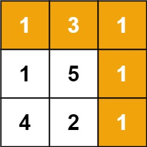

题面
给定一个包含非负整数的 m x n 网格 grid ，请找出一条从左上角到右下角的路径，使得路径上的数字总和为最小。
说明： 每次只能向下或者向右移动一步。
示例 1：

输入： grid = [[1,3,1],[1,5,1],[4,2,1]]
输出： 7
解释： 因为路径 1→3→1→1→1 的总和最小。示例 2：
输入： grid = [[1,2,3],[4,5,6]]
输出： 12提示：
m == grid.lengthn == grid[i].length1 <= m, n <= 2000 <= grid[i][j] <= 200
思路
和上一题（不同路径）结构几乎一样，只是把"方案数加法"换成了"最小代价 min"。
不同路径 | 最小路径和 | |
|---|---|---|
求什么 | 方案数 | 最小代价 |
递推 |
|
|
运算 | 加法（累计方案） | min（选更优路径）+ 当前格子代价 |
边界 | 第一行/列 = 1 | 第一行/列 = 累加 grid |
dp[i][j] 表示从左上角走到 (i, j) 的最小路径和。到达 (i, j) 只能从上方或左方来，选代价更小的那条路，再加上当前格子的值。
边界条件：
dp[0][0] = grid[0][0]：起点本身- 第一行：
dp[0][j] = dp[0][j-1] + grid[0][j]（只能从左边来，一路累加） - 第一列：
dp[i][0] = dp[i-1][0] + grid[i][0]（只能从上面来，一路累加）
grid: dp:
[1, 3, 1] [1, 4, 5]
[1, 5, 1] → [2, 7, 6]
[4, 2, 1] [6, 8, 7] ← 答案 7代码实现
class Solution:
def minPathSum(self, grid: List[List[int]]) -> int:
m = len(grid)
n = len(grid[0])
dp = [[0] * n for _ in range(m)]
dp[0][0] = grid[0][0]
for i in range(1, m):
dp[i][0] = dp[i-1][0] + grid[i][0]
for j in range(1, n):
dp[0][j] = dp[0][j-1] + grid[0][j]
for i in range(1, m):
for j in range(1, n):
dp[i][j] = min(dp[i-1][j], dp[i][j-1]) + grid[i][j]
return dp[m-1][n-1]- 易错点：
- 必须先单独初始化 `dp[0][0] = grid[0][0]`，边界循环从 1 开始：如果从 0 开始，
dp[i-1][0]或dp[0][j-1]会触发 Python 负索引（dp[-1][0]读到最后一行、dp[0][-1]读到最后一列），导致结果错误。上一题边界是常数 1 不依赖 dp 值所以没暴露 - 递推要加上 `grid[i][j]`：不像不同路径只算路径数，这题要累计路径上每个格子的值
- 边界是累加不是常数：第一行/列只有唯一走法，值是 grid 的前缀和，不是全部填 1
- 复杂度：时间 O(m × n)，空间 O(m × n)